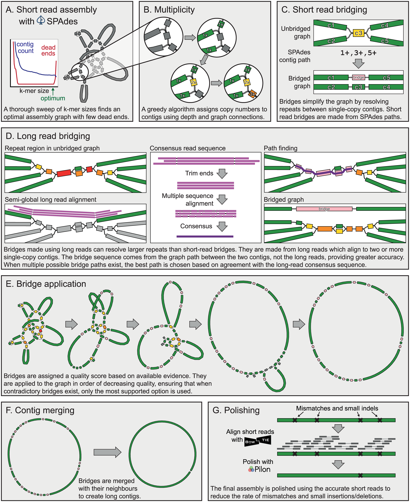
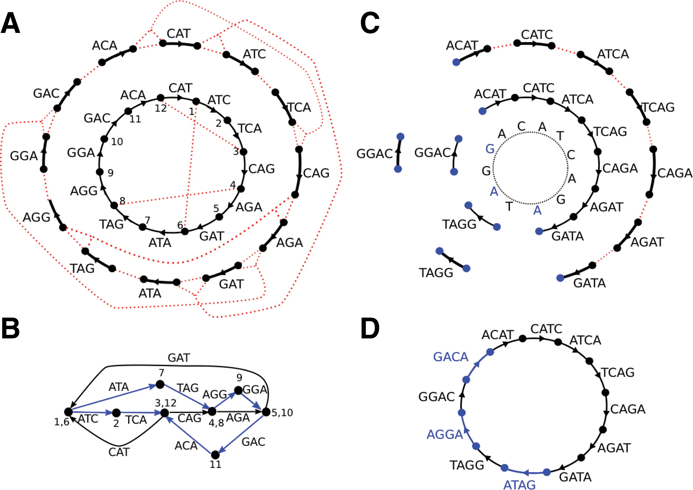
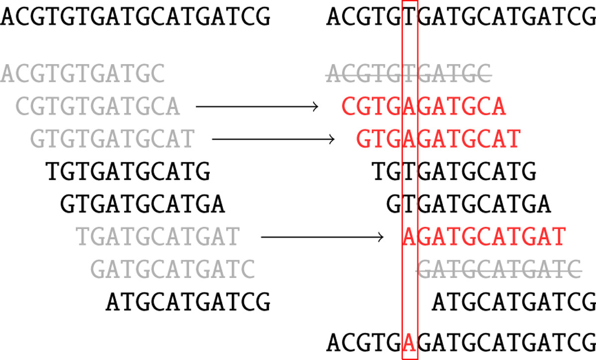
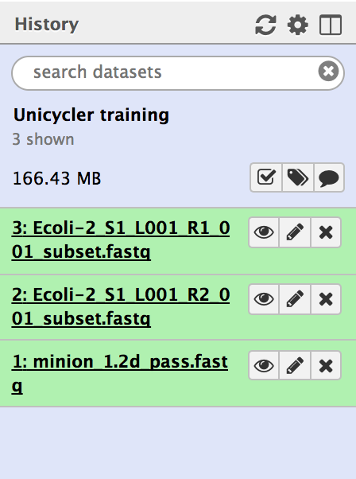
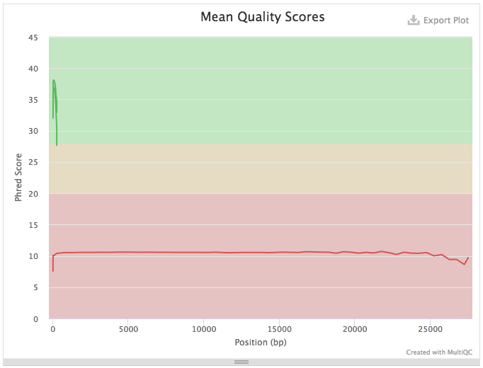
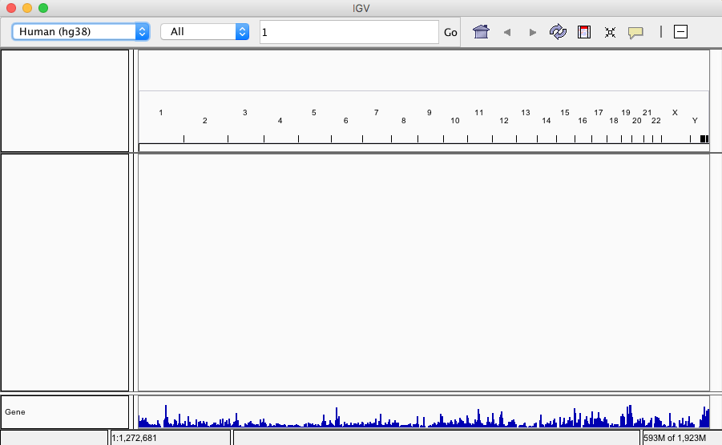
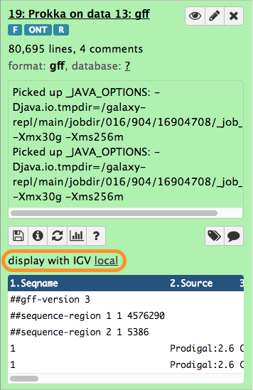

In this tutorial we assemble and annotate the genome of E. coli strain C-1. This strain is routinely used in experimental evolution studies involving bacteriophages. For instance, now classic works by Holly Wichman and Jim Bull (Bull 1997, Bull 1998, Wichman 1999) have been performed using this strain and bacteriophage phiX174.
To sequence the genome we have obtained the strain from the Yale E. coli Stock Center. The stock center sent us a filter paper disk infused with cells. The disk was placed in the center of an LB-agar plate. A single colony was picked and resuspended in a liquid LB medium, grown overnight, and genomic DNA was isolated. The DNA was then sequenced using two methods. To obtain high coverage, high accuracy data we used Illumina miSEQ to generated 250-bp paired end reads. To generate high length reads we used the Oxford Nanopore MinION machine.
Our goal is to reconstruct and annotate the full genome of E. coli C-1. As you will see in this tutorial a combination of many short, high accuracy reads with long, error-prone reads helps us produce an almost perfect assembly.
In this tutorial we will assemble a genome using two types of input data: (1) Illumina 250 bp paired-end reads and (2) Oxford Nanopore reads.
Illumina data
We generated 9,345,897 250 bp read pairs (library preparation performed on genomic DNA fragmented to mean size of 600 bp). However, to make sure that you can complete this tutorial in a finite amount of time we have downsampled (reduced in size) to 1,000,000 paired end reads - just enough to produce an accurate assembly.
Oxford Nanopore Data
There are 12,738 2d-reads. Maximum read length is 27,518 bp. The distribution of reads lengths looks like this:
Figure 1: Distribution of nanopore read lengths.
You can see that there many reads under the second peak with median of approximately 7.5 kb.
warning Oxford Nanopore Data Format
Oxford Nanopore machines output
data in fast5 format that contains additional information besides sequence data. In this tutorial we assume that this data is already converted into fastq. An additional tutorial dedicated to handling fast5 datasets will be developed shortly.
The tools
In this analysis we will perform two tasks: (1) assembly and (2) annotation. Below we will briefly outline the main ideas behind these two procedures and will describe the tools we will be using.
Assembly
comment Knowing your assembly
Here we assume that you know a thing or two about assembly process. If you don’t: look at the slides accompanying this tutorial as well as other tutorials is this section.
For assembly we will be using Unicycler (also see publication Wick et al. 2017). Unicycler is designed specifically for hybrid assembly (that is, using both short- and long-read sequencing data) of small (e.g., bacterial, viral, organellar) genomes. In our hands it has produced complete high quality assemblies. Unicycler employs a multi-step process that utilizes a number of software tools:
Figure 2: Simplified view of the Unicycler assembly process (From Wick et al. 2017) In short, Unicycler uses SPAdes (see below) to produce an assembly graph, which is then bridged (simplified) using long reads to produce the longest possible set of contigs. These are then polished by aligning the original short reads against contigs and feeding these alignments to Pilon - an assembly improvement tool. Wick et al. 2017
As you can see Unicycler relies heavily on SPAdes (Bankevich et al. 2012) and Pilon. We will briefly describe these two tools.
Spades
Multisized deBruijn graph
Assemblers usually construct graphs for k-mers of a fixed size. We have noted that when k is small it is difficult to resolve the repeats. If k is too large a corresponding graph may be fragmented (especially if read coverage is low). SPAdes uses several values for k (that are either manually set or inferred automatically) to create a multisized graph that minimized tangledness and fragmentation by combining various k-mers (Bankevich et al. 2012)):
Figure 3: Multisized de Bruijn graph. A circular Genome CATCAGATAGGA is covered by a set of Reads consisting of nine 4-mers, {ACAT, CATC, ATCA, TCAG, CAGA, AGAT, GATA, TAGG, GGAC}. Three out of 12 possible 4-mers from Genome are missing from Reads (namely {ATAG,AGGA,GACA}), but all 3-mers from the Genome are present in the Reads. (A) The outside circle shows a separate black edge for each 3-mer from Reads. Dotted red lines indicate vertices that will be glued. The inner circle shows the result of applying some of the glues. (B) The graph DB(Reads, 3) resulting from all the glues is tangled. The three h-paths of length 2 in this graph (shown in blue) correspond to h-reads ATAG, AGGA, and GACA. Thus Reads3,4 contains all 4-mers from Genome. (C) The outside circle shows a separate edge for each of the nine 4-mer reads. The next inner circle shows the graph DB(Reads, 4), and the innermost circle represents the Genome. The graph DB(Reads, 4) is fragmented into 3 connected components. (D) The multisized de Bruijn graph DB (Reads, 3, 4). Figure and text from Bankevich et al. 2012.
Read pair utilization
While the use of paired reads and mate pairs is key to genome assembly, and not new, SPAdes utilizes so called paired DeBruin graphs to take the advantage of the paired end data. One of the key issues with paired DeBruin graphs is that the resulting genome assemblies do not tolerate variability in insert sizes: The initial formulation of paired DeBruijn graphs assumed constant distance between pairs of reads. In practice this distance is always variable. SPAdes performs k-bimer (these are k-mers derived from pairedreads) adjustment to identify exact or nearly-exact distances for each k-bimer pair.
Error correction
Sequencing data contains a substantial number of sequencing errors that manifest themselves as deviations (bulges and non-connected components) within the assembly graph. One way to improve the graph before assembly it is to minimize the number of sequencing errors by performing error correction. SPAdes uses BayesHammer (Nikolenko et al. 2013) to correct the reads. Here is a brief summary of what it does:
SPAdes (or rather BayesHammer) counts k-mers in reads and computes k-mer statistics that take into account base quality values.
A Hamming graph is constructed in which k-mers are nodes. In this graph edges connect nodes (k-mers) if they differ from each other by a number of nucleotides up to a certain threshold (the Hamming distance). The graph is central to the error correction algorithm.
Then Bayesian subclustering is done on the graph from the previous step. For each k-mer we now know the center of its subcluster.
Solidk-mers are derived from cluster centers and are assumed to be error free.
Solid k-mers are mapped back to the reads.
Reads are corrected using solid k-mers:
Figure 4: Read correction. Black k-mers are solid. Grey k-mers are non-solid. Red k-mers are the centers of the corresponding clusters (two grey k-mers striked through on the right are non-solid singletons). As a result, one nucleotide is changed based on majority rule. (From Nikolenko et al. 2013)
In the case of the full dataset, SPAdes error correction changed 14,013,757 bases in 3,382,337 reads - a substantial fraction of the full ~18 million read dataset.
Pilon
Pilon improves draft assemblies by using the information from the original reads aligned to the draft assembly. The following image from a publication by Walker et al. 2014 highlights the steps of this process:
Figure 5: The left column depicts the conceptual steps of the Pilon process, and the center and right columns describe what Pilon does at each step while in assembly improvement and variant detection modes, respectively. During the first step (top row), Pilon scans the read alignments for evidence where the sequencing data disagree with the input genome and makes corrections to small errors and detects small variants. During the second step (second row), Pilon looks for coverage and alignment discrepancies to identify potential mis-assemblies and larger variants. Finally (bottom row), Pilon uses reads and mate pairs which are anchored to the flanks of discrepant regions and gaps in the input genome to reassemble the area, attempting to fill in the true sequence including large insertions. The resulting output is an improved assembly and/or a VCF file of variants. (From Walker et al. 2014)
Annotation
For annotation we are using Prokka (also see Seemann 2014). It scans the assembly generated with Unicycler with a set of feature prediction tools and compiles a list of genome annotation. It predicts the following features (Table from Seemann 2014):
Prokka predicts protein-coding regions using a two step process. It first identifies coordinates of putative genes using Prodigal and then compares the gene sequence against databases of known sequences at protein level using Blast+ and HMMer.
Let’s try it
Load data and assess quality
In this example we will use a downsampled version of E. coli C-1 Illumina and ONT sequencing data. These include 3 files: forward and reverse reads for Illumina, and Long read file produced by ONT. All data are in fastq format.
hands_on Hands-on: Obtaining our data
Make sure you have an empty analysis history. Give it a name.
tip Tip: Creating a new history
Click the new-history icon at the top of the history panel
If the new-history is missing:
Click on the galaxy-gear icon (History options) on the top of the history panel
Open the Galaxy Upload Manager (galaxy-upload on the top-right of the tool panel)
Select Paste/Fetch Data
Paste the link into the text field
Press Start
Close the window
By default, Galaxy uses the URL as the name, so rename the files with a more useful name.
tip Tip: Importing data from a data library
As an alternative to uploading the data from a URL or your computer, the files may also have been made available from a shared data library:
Go into Shared data (top panel) then Data libraries
Find the correct folder (ask your instructor)
Select the desired files
Click on the To History button near the top and select as Datasets from the dropdown menu
In the pop-up window, select the history you want to import the files to (or create a new one)
Click on Import
If all goes well you will see datasets uploading and changing states from gray to green as shown below. The figure below also shows how datasets can be tagged.
Figure 6: Sequencing data loaded into Galaxy history. The full progression from gray (scheduling) to green (all OK) state is shown. To make it easier to identify datasets as we progress through the analysis we use so-called Hashtags. To tag a dataset: click on dataset to expand it (as shown in panel four); click the tag icon () and a text field will appear. Add a tag (in this case F) pre-pended with hash (#). Hit enter. Do this for all three datasets and it will appear as in panel five.
Assess Read Quality
To assess quality we will use two tools: FastQC (Andrews) to generate quality statistics and multiQC (Ewels et al. 2016) to summarize these statistics.
hands_on Hands-on: Quality Control
FastQCtool:
param-files“Short read data from your current history”: Select all three FastQ datasets simultaneously
MultiQCtool: to generate a summary of the FastQC reports with
“Which tool was used generate logs?”: FastQC
“Type of FastQC output”: Raw data
param-files“FastQC Output”: RawData outputs of FastQC
A quick look at quality score distribution will show a confusing picture:
Figure 7: Because Illumina reads (green) are much shorter that ONT reads (red) the plot looks strange. ONT reads generally have low quality scores and so they are not really meaningful in the context of this technology. However, in the case of Illumina data they mean a lot...
So let’s zoom in into Illumina data:
Figure 8: Zooming in shows quality distribution for Illumina reads. This is excellent data with mean base qualities above 30 across all reads.
Assembly with Unicycler
Now it is time to perform assembly.
hands_on Hands-on: Unicycler Assembly
Unicyclertool with the following parameters :
“Paired or Single end data?” to Paired
“First Set of reads” to the forward reads file f
“Second Set of reads” to the reverse reads file r
“Long reads” to the MinION file
Use default parameters
Assembly takes time!
There is no such thing as Assembly in real time. It takes time so it is a good time to have lunch or at least coffee. This Unicycler run will take anywhere between 90 minutes and two hours.
Assess Assembly quality with Quast
Quast (Gurevich et al. 2013) is a tool providing quality metrics for assemblies, and can also be used to compare multiple assemblies. The tool can also take an optional reference file as input, and will provide complementary metrics.
hands_on Hands-on: Assembly Quality
Quasttool: with the following parameters
“Contigs/scaffolds output file”: Select the fasta file resulting from the Unicycler assembly.
The Quast tool outputs assembly metrics as an html file with metrics and graphs. The image below looks exceptionally boring. This is a good thing:
Figure 9: Quast Output: Quast provides different statistics such as the number of contigs or scaffolds, the N50 and N75, and the total length of the assembly. You can also access 3 plots, the cumulative length of the contigs, the Nx, or the GC content.
One can see that there are two (!) contigs. The largest contig is 4,576,290 bp (for comparison E. coli K12 MG1655 strain genome length is 4,656,144 bp) and the smallest is 4,581,676 (total length) - 4,576,290 (length of the largest) = 5,386 bp. When we analyzed this dataset for the first time we were initially puzzled by this second contig. But we quickly realized that this is simply the genome of bacteriophage phiX174 which is routinely used as a spike-in in Illumina sequencing. Thus we have two genomes: the one of E.coli C-1 and phiX174! We can now use Prokka to annotate our two genomes.
Annotation with Prokka
hands_on Hands-on: Annotation
Prokkatool:
“Contigs to annotate”: Select the assembly ouput of Unicycler
“Genus name”: Escherichia
“Species name”: coli
“Strain name”: C-1
“Use genus-specific BLAST database”: yes
Prokka outputs 10 datasets (including two log files). These are in various formats:
txt : Provides Statistics on the annotation : number of CDS predicted, number of rRNA etc.
tbl : Provides a tabulated list of annotated features.
fsa : Nucleotide fasta file of the input contig sequence.
sqn : ASN.1 format file for submission to GenBank.
ffn : Nucleotide FASTA file of all the prediction transcripts.
faa : Protein FASTA file of the translated CDS sequences.
fna : Nucleotide fasta file of the input contig sequence.
Let’s look at the entire assembly and its annotation in the genome browser. We can do this using Integrated Genome Browser (IGV).
Visualization requires a local installation of IGV. If you have IGV installed - just start it. If you don’t - read on.
Starting IGV
Go to IGV download page and select one of the options. The one I would try first would be Java Web Start. Simply click the Launch button for 10 GB distribution.
hands_on Hands-on: Visualization in IGV
Start IGV. It will look something like this:
Figure 10: IGV started by using Java Web Start. Note that it is currently showing Human Genome (hg38) build. This is obviously not what we want.
Click on the local link highlighted with orange outline. The browser will change:
Figure 12: Now you can see the major contig shown in the browser window.
Let’s add Prokka annotations to the browser image. For this simply expand Prokka’s GFF3 dataset and click on the local link:
Figure 13: Expanded GFF dataset generated with Prokka. Click on the local link (highlighted with orange outline) to display this dataset within IGV.
You will now see the annotations within the browser window:
Wichman, H. A., 1999 Different Trajectories of Parallel Evolution During Viral Adaptation. Science 285: 422–424.10.1126/science.285.5426.422
Bankevich, A., S. Nurk, D. Antipov, A. A. Gurevich, M. Dvorkin et al., 2012 SPAdes: A New Genome Assembly Algorithm and Its Applications to Single-Cell Sequencing. Journal of Computational Biology 19: 455–477.10.1089/cmb.2012.0021
Nikolenko, S. I., A. I. Korobeynikov, and M. A. Alekseyev, 2013 BayesHammer: Bayesian clustering for error correction in single-cell sequencing. BMC Genomics 14: S7.10.1186/1471-2164-14-s1-s7
Gurevich, A., V. Saveliev, N. Vyahhi, and G. Tesler, 2013 QUAST: quality assessment tool for genome assemblies. Bioinformatics 29: 1072–1075.10.1093/bioinformatics/btt086
Walker, B. J., T. Abeel, T. Shea, M. Priest, A. Abouelliel et al., 2014 Pilon: An Integrated Tool for Comprehensive Microbial Variant Detection and Genome Assembly Improvement (J. Wang, Ed.). PLoS ONE 9: e112963.10.1371/journal.pone.0112963
Ewels, P., M. Magnusson, M. Käller, and S. Lundin, 2016 MultiQC: summarize analysis results for multiple tools and samples in a single report. Bioinformatics 32: 3047–3048.10.1093/bioinformatics/btw354
Wick, R. R., L. M. Judd, C. L. Gorrie, and K. E. Holt, 2017 Unicycler: Resolving bacterial genome assemblies from short and long sequencing reads. PLOS Computational Biology 13: 1–22.10.1371/journal.pcbi.1005595
Feedback
Did you use this material as an instructor? Feel free to give us feedback on how it went.
Batut et al., 2018 Community-Driven Data Analysis Training for Biology Cell Systems 10.1016/j.cels.2018.05.012
details BibTeX
@misc{assembly-unicycler-assembly,
author = "Anton Nekrutenko and Delphine Lariviere and Simon Gladman",
title = "Unicycler Assembly (Galaxy Training Materials)",
year = "2021",
month = "01",
day = "06"
url = "\url{/training-material/topics/assembly/tutorials/unicycler-assembly/tutorial.html}",
note = "[Online; accessed TODAY]"
}
@article{Batut_2018,
doi = {10.1016/j.cels.2018.05.012},
url = {https://doi.org/10.1016%2Fj.cels.2018.05.012},
year = 2018,
month = {jun},
publisher = {Elsevier {BV}},
volume = {6},
number = {6},
pages = {752--758.e1},
author = {B{\'{e}}r{\'{e}}nice Batut and Saskia Hiltemann and Andrea Bagnacani and Dannon Baker and Vivek Bhardwaj and Clemens Blank and Anthony Bretaudeau and Loraine Brillet-Gu{\'{e}}guen and Martin {\v{C}}ech and John Chilton and Dave Clements and Olivia Doppelt-Azeroual and Anika Erxleben and Mallory Ann Freeberg and Simon Gladman and Youri Hoogstrate and Hans-Rudolf Hotz and Torsten Houwaart and Pratik Jagtap and Delphine Larivi{\`{e}}re and Gildas Le Corguill{\'{e}} and Thomas Manke and Fabien Mareuil and Fidel Ram{\'{\i}}rez and Devon Ryan and Florian Christoph Sigloch and Nicola Soranzo and Joachim Wolff and Pavankumar Videm and Markus Wolfien and Aisanjiang Wubuli and Dilmurat Yusuf and James Taylor and Rolf Backofen and Anton Nekrutenko and Björn Grüning},
title = {Community-Driven Data Analysis Training for Biology},
journal = {Cell Systems}
}
congratulations Congratulations on successfully completing this tutorial!
curriculum Do you want to extend your knowledge? Follow one of our recommended follow-up trainings:
 Anton Nekrutenko
Anton Nekrutenko Delphine Lariviere
Delphine Lariviere Simon Gladman
Simon Gladman